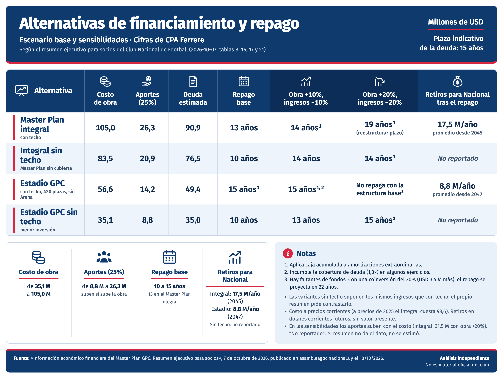

Master Plan integral
El estadio remodelado y ampliado, con el Arena, los estacionamientos, los espacios comerciales y rentables y el resto del complejo F-0036 · p. 1.
← Guía para el socio · La moción, artículo por artículo · El anteproyecto, etapa por etapa
Gran Parque Central · Master Plan · Las cuentas
Lo que dice el resumen financiero que el club publicó el 10 de octubre: cuatro alternativas, su costo, la deuda, en cuántos años se paga y qué le dejaría a Nacional. Cada dato enlaza a la página del PDF oficial.
El estadio remodelado y ampliado, con el Arena, los estacionamientos, los espacios comerciales y rentables y el resto del complejo F-0036 · p. 1.
Las mismas unidades, “excluyendo o postergando la cubierta del estadio” F-0036 · p. 2.
Solo el estadio, con hospitalidad y un estacionamiento de 430 plazas. Sin Arena, sin espacios comerciales y rentables y sin Plaza del Hincha F-0036 · p. 2.
El mismo alcance, sin la cubierta. Es la alternativa con menor inversión y menor aporte F-0036 · p. 2.
Millones de dólares. Escenario base y sensibilidades del estudio de CPA Ferrere, según el resumen F-0036 · p. 2 F-0036 · p. 5 F-0036 · p. 6. Plazo indicativo de la deuda: 15 años.
| Inversión | Años de repago de la deuda | Después | |||||
|---|---|---|---|---|---|---|---|
| Alternativa | Costo de obra | Aportes (25%) | Deuda | Base | Obra +10%, ingresos −10% | Obra +20%, ingresos −20% | Retiros para Nacional |
| Master Plan integral | 105,0 | 26,3 | 90,9 | 13 años | 14 años¹ | 19 años¹ (reestructurar el plazo) | 17,5 M/año promedio desde 2045 |
| Integral sin techo | 83,5 | 20,9 | 76,5 | 10 años | 14 años | 14 años¹ | No reportado |
| Estadio GPC | 56,6 | 14,2 | 49,4 | 15 años¹ | 15 años¹ ² | No repaga con la estructura base³ | 8,8 M/año promedio desde 2047 |
| Estadio GPC sin techo | 35,1 | 8,8 | 35,0 | 10 años | 13 años | 15 años¹ | No reportado |
La misma tabla como imagen, para compartir. Es un análisis independiente, no material oficial del club.

Descargar la imagenQué pasa con cada alternativa si la obra sale más cara y los ingresos son menores, según el resumen.
Con desvíos del 10% repaga dentro de 15 años. Con obra 20% más cara e ingresos 20% menores, el repago se va a 19 años y “sería necesario reestructurar el plazo de la deuda”, aunque podría cancelarse dentro de la vigencia del fideicomiso F-0036 · p. 5.
En los dos escenarios combinados, el repago queda dentro de 15 años F-0036 · p. 5.
Es la que tiene “menor holgura”. Con desvíos del 10% puede repagar usando caja, pero incumple la cobertura exigida en algunos años. Con desvíos del 20%, “la estructura base resulta insuficiente” F-0036 · p. 5.
Repaga entre 10 y 15 años. En el escenario del 20% necesita usar caja para pagos extraordinarios F-0036 · p. 5.
En todos los escenarios los aportes siguen siendo el 25% del costo, así que suben si la obra se encarece: en el plan completo, de 26,3 M a 31,5 M con un sobrecosto del 20%. Las cifras de repago suponen que esa plata se consigue F-0036 · p. 5.
Los recursos que considera el modelo F-0036 · p. 3.
Los recursos que ya tiene el club “contribuyen al repago, pero no constituyen ingresos creados por la inversión” F-0036 · p. 4. Supuestos: casi 20.000 m² rentables alquilados a 20 y 25 dólares el m², con 2,5% de vacancia; los 239 palcos renovados a un promedio de 100.000 dólares por diez años; y 1,25 M por año del Club Social desde 2030 F-0036 · p. 4. “Las estimaciones comerciales no han sido confirmadas mediante estudios independientes” F-0036 · p. 4.
Este análisis es de Claude, la IA que asiste al proyecto, y es opinión. Se apoya en el resumen financiero y las fuentes enlazadas. Las cuentas propias están marcadas como tales.
En los escenarios malos, lo que más pesa es el techo. Con obra 20% más cara e ingresos 20% menores, las dos variantes con techo pasan los 15 años o no repagan, y las dos sin techo quedan en 15 años o menos F-0036 · p. 5. Pero esa lectura depende del supuesto de que sacar el techo no cambia los ingresos F-0036 · p. 3: si el techo trae hospitalidad, espectáculos o publicidad, las variantes sin techo se ven mejor de lo que son.
El plan completo no es más seguro que el estadio solo, pero deja más. Con desvíos del 20%, el plan completo necesita reestructurar la deuda (19 años) y el estadio con techo no repaga F-0036 · p. 5: ninguno de los dos con techo resiste ese escenario con la estructura base. Después del repago, el plan completo dejaría unas dos veces lo del estadio solo por año (17,5 M contra 8,8 M), con un costo unas 1,9 veces mayor (105,0 contra 56,6) F-0036 · p. 2 F-0036 · p. 6. Cuenta propia y gruesa: mezcla años distintos y dólares corrientes.
El esfuerzo de los socios crece con el alcance. Los aportes van de 8,8 M a 26,3 M según la alternativa, y suben si la obra se encarece F-0036 · p. 2 F-0036 · p. 5. El resumen los describe como voluntarios F-0036 · p. 2; cuánto se recaude es uno de los supuestos de los que dependen todos los plazos.
Es un buen resumen, con un límite claro. Declara sus propios límites: estimaciones comerciales sin validar, sensibilidades sin probabilidades y supuestos por contrastar F-0036 · p. 3 F-0036 · p. 4. Pero lo escribe el club, que impulsa la moción, sobre un estudio que nadie de afuera puede leer todavía. Hasta que se publique el estudio, sus cifras se pueden citar, no verificar.
Según el resumen, las cuatro alternativas se pueden pagar en el escenario base; el plan completo cuesta 105 M y deja más plata después, y las variantes sin techo son las que mejor resisten si las cosas salen peor. Antes de votar vale preguntar cuánto se espera recaudar entre los socios, si sacar el techo cambia los ingresos y cuándo se publica el estudio completo. La moción no aprueba estos números: los socios vuelven a votar con el proyecto ejecutivo y el financiamiento a la vista F-0026 · p. 5.
Los enlaces con página abren el PDF en esa página.